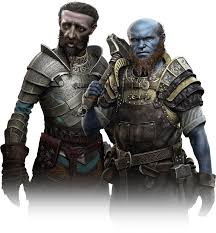
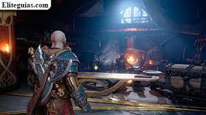

Maestros Herreros
Sindri y Brok son hermanos enanos y los herreros más talentosos de todos los Nueve Reinos, conocidos por crear algunas de las armas y artefactos más poderosos de la mitología nórdica. A pesar de ser hermanos, tienen personalidades muy diferentes: Sindri es meticuloso, limpio y algo neurótico, mientras que Brok es grosero, directo y no le importa ensuciarse. Su taller viajero les permite estar disponibles para Kratos y Atreus en diferentes ubicaciones a lo largo de su viaje.
Los hermanos son responsables de la creación de algunas de las armas más icónicas, incluyendo el Hacha Leviatán forjada para Faye, el Mjolnir de Thor, y las increíbles mejoras que reciben las armas de Kratos durante su aventura. Su experiencia en la forja es incomparable, y su conocimiento de las runas y la magia de los reinos les permite crear artefactos con propiedades únicas y poderosas.
Relación con Kratos y Atreus
La relación entre los hermanos enanos y Kratos comienza con cierta desconfianza, pero rápidamente se convierte en una alianza sólida basada en el respeto mutuo. Sindri inicialmente tiene miedo de Kratos, mientras que Brok inmediatamente reconoce su naturaleza como guerrero. Con el tiempo, ambos desarrollan un cariño genuino por Atreus, a quien ven casi como un sobrino, y se preocupan profundamente por su bienestar.
Los enanos no solo proporcionan mejoras de equipo, sino que también ofrecen consejos valiosos, información sobre los reinos, y ayudan en momentos cruciales de la historia. Su conflicto personal - el distanciamiento entre hermanos debido a un desacuerdo sobre cómo dividir la esencia de su alma - añade profundidad a sus personajes y muestra que incluso los seres más talentosos tienen sus propias luchas internas y arrepentimientos.

Los hermanos Sindri y Brok en su taller
La legendaria forja de los hermanos enanos